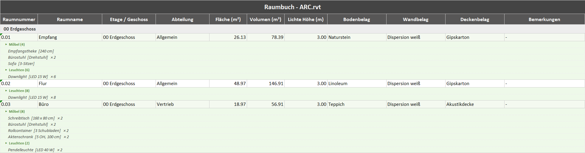
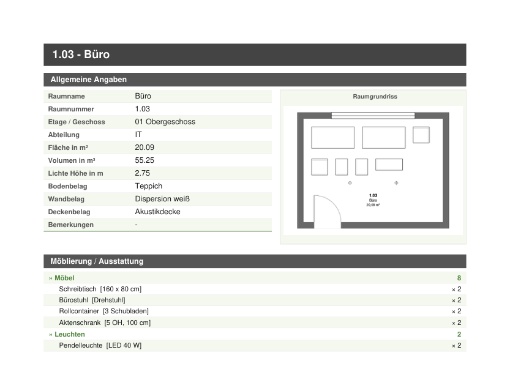
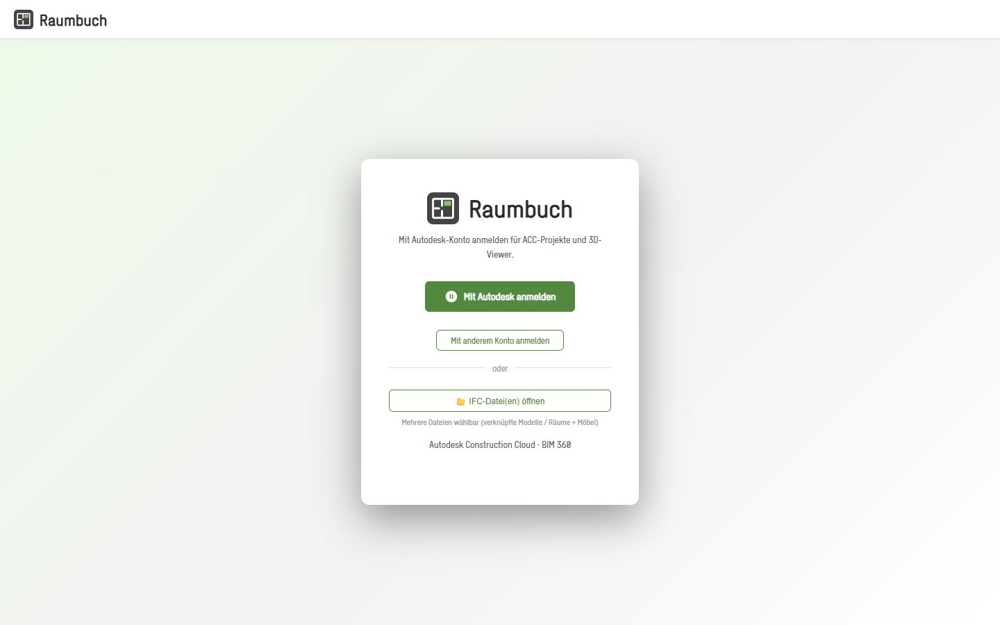
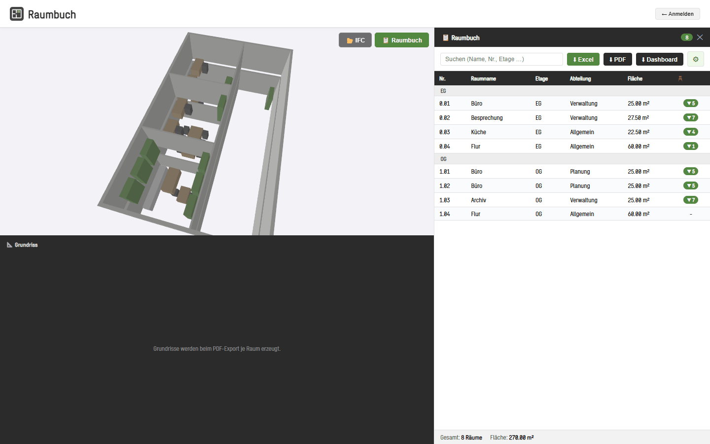
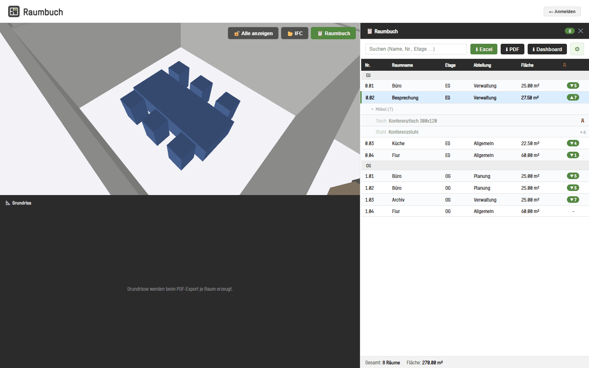
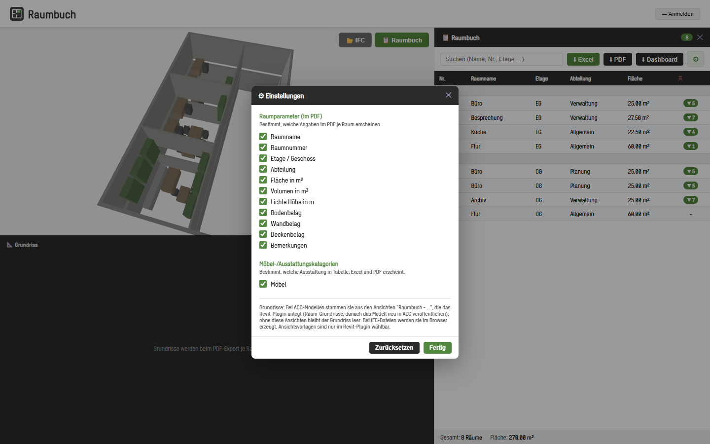

Raumbuch
One room book, two routes to it.
- C#
- Revit API
- React
- Vite
- FastAPI
- APS Viewer
- Model Derivative API
- web-ifc
- three.js
A room book (Raumbuch in German) lists every room in a building with its size, finishes and furniture. It is usually typed up by hand. Raumbuch builds it automatically from the 3D building model and exports it to Excel, PDF and an interactive web page.
The problem
A room book lists every room and everything in it. Teams often put it together by hand from the model, room by room, and have to start again when the design changes.
What it does
Revit add-in (Revit 2023 to 2027). It finds the room that each piece of furniture and equipment stands in, also in linked models, and writes the room number and name onto the item. It then creates one cropped floor plan per room and exports the room book as an Excel file, a PDF with one page per room, and an interactive HTML page that works offline. The three steps sit in one panel inside Revit, in German and English.
Web app. It signs in to Autodesk Construction Cloud, lets you browse hubs, projects and folders in every Autodesk data region, and opens a model in the browser with a floor plan next to the 3D view. It reads the rooms from the 3D model, from Autodesk's model data service, or from the 2D plans when neither has them. Furniture from the main model and every linked model is placed in one coordinate system and matched to a room by its room parameter, by its position, or by the nearest room within 2 m.
Both versions export a formatted German Raumbuch to Excel, PDF and a single-file HTML dashboard whose charts also work as filters.
Features
- Revit add-in for Revit 2023 to 2027: one panel with three steps and a highlighted next action, in German and English
- Finds the room each piece of furniture and equipment stands in, also across linked models, and writes the room number and name onto it
- Creates one cropped floor plan per room, named by room number and name
- Exports the room book as Excel (area, volume and height as real numbers you can add up and filter), as a PDF with a cover and one page per room with its plan and furniture, and as an offline HTML dashboard
- Settings choose which room details go into the PDF, which furniture categories count, and how the room plans look
- Web app: Autodesk sign-in, with hubs, projects and folders from all Autodesk data regions (US, Europe, Australia) in one list
- Web app: 3D viewer with a floor plan beside it; selecting a room highlights its furniture and cuts the room out of the model
- Web app: rooms from the 3D model, from Autodesk's model data or from the 2D plans; furniture from the main model and every linked model in one coordinate system
- Furniture is matched to rooms by parameter, by position, or by the nearest room within 2 m; anything left over is listed separately
- Searchable room table grouped by floor, with area totals and furniture grouped by category and type
- IFC files open in the browser without any login; several files form one combined model, and nothing is uploaded
- In IFC mode, selecting a room shows it from above with its furniture
- Dashboard export: one offline HTML file with summary tiles, charts that act as filters, a room table with plan images and a CSV download
Terms on this page
- Revit
- Autodesk's main software for designing buildings as BIM models. Most architects and engineers use it.
- Add-in
- A small program that runs inside another program, here inside Revit or Navisworks, and adds new buttons and features to it.
- Linked model
- A model from another file, often from another team, shown inside your model for reference but kept separate from it.
- ACC / BIM 360
- Autodesk Construction Cloud, an online platform where project teams store and share models and documents. BIM 360 is the older version.
- IFC
- An open file format for building models that any BIM software can read. It is maintained by buildingSMART.
See it
Screenshots & demos







